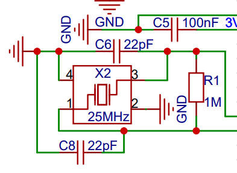
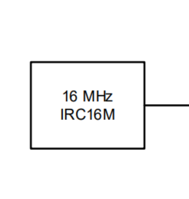
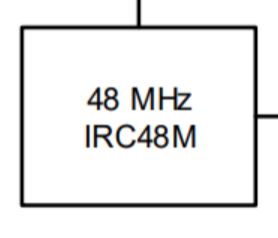

<!DOCTYPE lake>
<h2 data-lake-id="VCEoQ" id="VCEoQ"><span data-lake-id="u86300718" id="u86300718">总线</span></h2><p data-lake-id="uca5d5b53" id="uca5d5b53"></p><h3 data-lake-id="AjGeT" id="AjGeT"><span data-lake-id="ub2da510d" id="ub2da510d">AHB总线</span></h3><p data-lake-id="u8d38eef7" id="u8d38eef7"><span data-lake-id="u5bbf34df" id="u5bbf34df">AHB的全称是"Advanced High-performance Bus"，中文翻译就是"高级高性能总线"。这是一种在计算机系统中用于连接不同硬件组件的总线架构，它可以帮助这些组件之间高效地传输数据和信息。这个总线架构通常用于处理速度较快且对性能要求较高的部件之间的通信。</span></p><p data-lake-id="uf589b3f7" id="uf589b3f7"><span data-lake-id="u99b80873" id="u99b80873">​</span><br/></p><p data-lake-id="uac948ed6" id="uac948ed6"><strong><span data-lake-id="u529bcb94" id="u529bcb94">为了方便理解，我们可以形象的用一个例子来说明什么是AHB：</span></strong></p><p data-lake-id="u3a264359" id="u3a264359"><span data-lake-id="uee754663" id="uee754663">一条大街上，有很多房子，每家房子每天都有一些自己的操作，有的房子每天都要点外卖，有的房子每天都要做奶茶，有的房子每天都要做汉堡....</span></p><p data-lake-id="u853c2d25" id="u853c2d25"><span data-lake-id="u063b539f" id="u063b539f">由于受到环境限制，每个房子里面的人不可以走出房子，但是他们需要向外卖东西或者买入一些东西。</span></p><p data-lake-id="u3510b0de" id="u3510b0de"><span data-lake-id="ue4ca678e" id="ue4ca678e">但是，有一个大巴士，他可以帮助这些房子运送自己要买入的东西和要卖出的东西，帮助这些房子进行物品的交换。</span></p><p data-lake-id="u0b5a1855" id="u0b5a1855"><span data-lake-id="ua4e6b15c" id="ua4e6b15c">大巴士有一些特点，准时发车，24小时不间断；谁家的房子亮灯了，并且有人给他招手了，大巴士就停下来给他运东西。</span></p><p data-lake-id="u60cc09b0" id="u60cc09b0"><span data-lake-id="ub4be97a1" id="ub4be97a1">每个房子也都有些特点，家里有个灯，还有个招手员。但是每家的招手员不同，有的是老爷爷，有的是小孩子，有的是运动员，他们招手的频率不同。</span></p><p data-lake-id="uf8ffcf20" id="uf8ffcf20"><span data-lake-id="u120ef350" id="u120ef350">​</span><br/></p><p data-lake-id="u3909229f" id="u3909229f"><strong><span data-lake-id="u533933fe" id="u533933fe">在这个例子中，这条大街和巴士构成了一套系统，我们称之为AHB总线。</span></strong></p><ul list="u3c7546f9"><li data-lake-id="u2d122ad2" fid="u836aa964" id="u2d122ad2"><span data-lake-id="u36f9ab9d" id="u36f9ab9d">不同的房子代表着不同的功能功能外设，比如GPIO，SRAM，USBHS等。</span></li><li data-lake-id="u9875111b" fid="u836aa964" id="u9875111b"><span data-lake-id="ufdfd32ac" id="ufdfd32ac">房子的灯表示是否启用对应的功能。</span></li><li data-lake-id="u9c152151" fid="u836aa964" id="u9c152151"><span data-lake-id="uc212189d" id="uc212189d">房子的招手员决定了功能执行的频率。</span></li><li data-lake-id="ue506bd8b" fid="u836aa964" id="ue506bd8b"><span data-lake-id="u3ce52d82" id="u3ce52d82">大巴士24小时不间断准时发车，可以理解为晶振震荡过程中，会去按照房子招手员的频率去访问他们。</span></li></ul><p data-lake-id="u69893463" id="u69893463"><span data-lake-id="u4e6ceb48" id="u4e6ceb48">​</span><br/></p><p data-lake-id="ua4b5d19a" id="ua4b5d19a"><span data-lake-id="u278d00ac" id="u278d00ac">简单的进行总结，</span><u><span data-lake-id="u4719ec58" id="u4719ec58">AHB的主要作用是帮助不同的硬件组件（比如处理器、内存、外设等等）之间高效地传输数据和信息。</span></u><span data-lake-id="ub66ccbc0" id="ub66ccbc0">想象一下，计算机就像是一个大家庭，各个成员需要分享信息和资源。AHB就像是家庭里的交通工具，让不同的家庭成员之间能够顺畅地交流和共享。</span></p><h3 data-lake-id="e1jNz" id="e1jNz"><span data-lake-id="ub52464f1" id="ub52464f1">APB总线</span></h3><p data-lake-id="uce3d3f61" id="uce3d3f61"><span data-lake-id="ub0adb971" id="ub0adb971">APB的全称是"Advanced Peripheral Bus"，中文翻译就是"高级外设总线"。这是一种用于连接计算机系统中外部设备（外设）的总线架构，它可以帮助外设和其他部件之间传输数据和信息。这个总线通常用于连接一些相对简单的外部设备。</span></p><p data-lake-id="u355de81d" id="u355de81d"><span data-lake-id="u6f4454f0" id="u6f4454f0">APB的作用和AHB类似，只不过AHB是大巴士，APB是小巴士，吞吐量不同。</span></p><h2 data-lake-id="VOxbu" id="VOxbu"><span data-lake-id="u27dbe8a8" id="u27dbe8a8">时钟</span></h2><p data-lake-id="ude8608da" id="ude8608da"></p><h3 data-lake-id="yFSq4" id="yFSq4"><span data-lake-id="u3a500db5" id="u3a500db5">时钟树</span></h3><p data-lake-id="ua06d74ac" id="ua06d74ac"><span data-lake-id="u2d391f00" id="u2d391f00">Clock Tree。时钟树是在集成电路设计中的一个重要概念，它是一种组织结构，</span><strong><span data-lake-id="ud44c5e30" id="ud44c5e30">用于分配和传递时钟信号</span></strong><span data-lake-id="u8f34d60c" id="u8f34d60c">到芯片内的各个功能模块。时钟树的设计和优化对于确保整个芯片的正常运行、时序准确性和功耗效率都非常关键。</span></p><p data-lake-id="ud3362850" id="ud3362850"><br/></p><h3 data-lake-id="gOmo0" id="gOmo0"><span data-lake-id="ucff688a2" id="ucff688a2">外部晶振</span></h3><p data-lake-id="u499b07d6" id="u499b07d6"></p><p data-lake-id="u5c8a9dfa" id="u5c8a9dfa"><span data-lake-id="uc741ad9a" id="uc741ad9a">开发板芯片外接了一个晶振，为25M</span></p><h3 data-lake-id="TZccC" id="TZccC"><span data-lake-id="u1a217202" id="u1a217202">内部晶振</span></h3><p data-lake-id="u4e7483d6" id="u4e7483d6"></p><p data-lake-id="ueaa5ec21" id="ueaa5ec21"><span data-lake-id="u61d6011e" id="u61d6011e">芯片内置了一个16M的晶振和一个48M的晶振</span></p><h3 data-lake-id="uEjQu" id="uEjQu"><span data-lake-id="u0f975bdc" id="u0f975bdc">倍频</span></h3><p data-lake-id="uc10bd7f9" id="uc10bd7f9"><span data-lake-id="u32c2db18" id="u32c2db18">将一个较低频率的时钟信号倍频到更高频率是一种常见的操作，通常使用锁相环（PLL，Phase-Locked Loop）或者数字锁相环（DLL，Delay-Locked Loop）等电路来实现。以下是一个基本的步骤来将内部晶振16M倍频到240M，假设你使用的是PLL：</span></p><ol list="u3d05d230"><li data-lake-id="ue8d3b123" fid="ue32d332f" id="ue8d3b123"><strong><span data-lake-id="uab86a0ca" id="uab86a0ca">反馈回路设置</span></strong><span data-lake-id="ue29851da" id="ue29851da">：将内部晶振16M连接到PLL的参考输入。这个参考输入相当于上面提到的“主时钟源”。</span></li><li data-lake-id="u712960e6" fid="ue32d332f" id="u712960e6"><strong><span data-lake-id="u9fd63fb9" id="u9fd63fb9">设置分频比</span></strong><span data-lake-id="uca215eee" id="uca215eee">：调整PLL的分频比，这个分频比就是你想要的倍频比。在你的情况下，希望从16M倍频到240M，那么分频比就是240M/16M = 15。</span></li><li data-lake-id="ube9b93f2" fid="ue32d332f" id="ube9b93f2"><strong><span data-lake-id="u9974fc4e" id="u9974fc4e">锁定环路</span></strong><span data-lake-id="u299623e9" id="u299623e9">：启动PLL，并且调整它的参数，使得输出频率为所需的240M。这个过程中，PLL会自动调整内部的时钟信号来尽量与输入参考时钟同步。</span></li></ol><p data-lake-id="uf953a170" id="uf953a170"><br/></p><p data-lake-id="u096a2779" id="u096a2779"><span data-lake-id="u5ceb0a6e" id="u5ceb0a6e">GD32和STM32采用的就是PLL这种方式实现倍频的。</span></p>